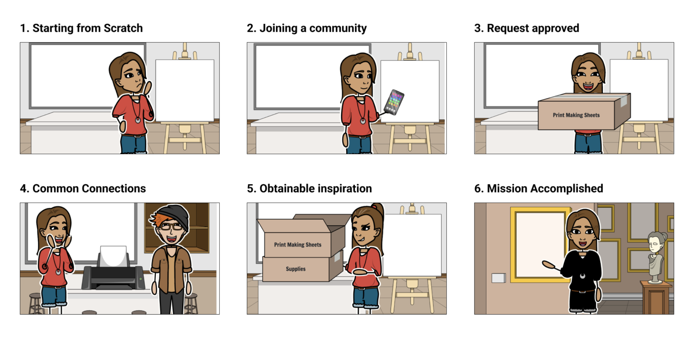
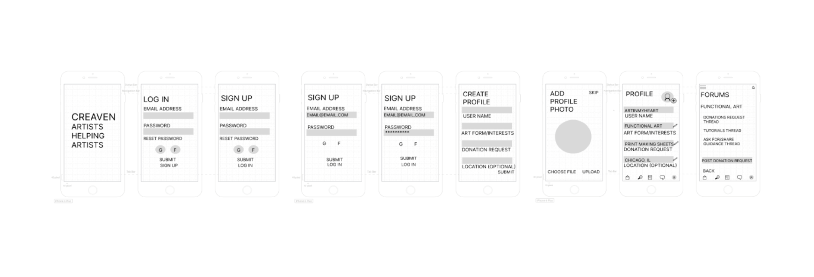
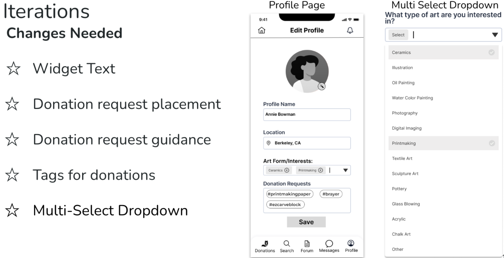
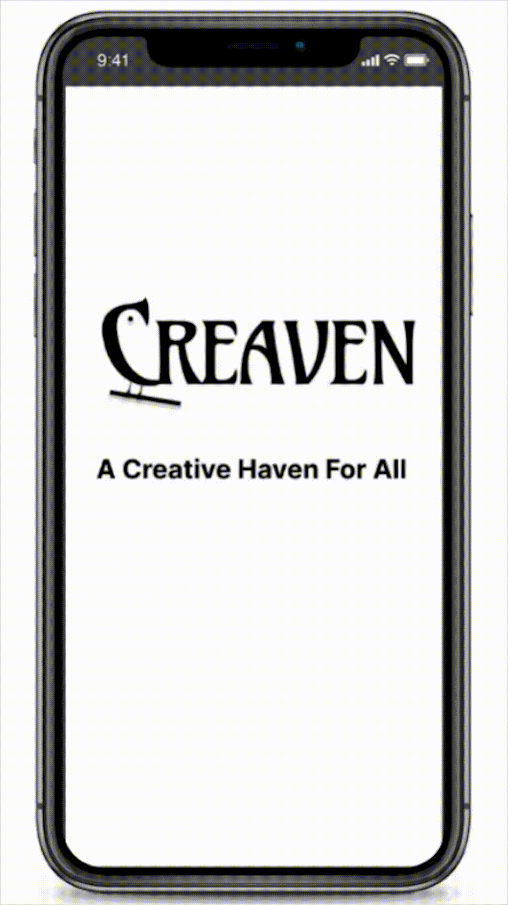

Introduction
Creaven is a “creative haven for all” to allow artists to communicate and help each other by sharing supplies, information, and art work. It is a mobile platform with moderated forums designed to address the many different art forms in the studio art world. Many artists may not be able to create their initial concept or even meet their full potential due to lack access to supplies, financial resources, guidance and community. Creaven’s success means more artists, more inspiration and more art being created in this world.
User Research
We began our user research by creating proto persona to better understand a potential user who is an artists willing to donate his supplies or time to help a fellow artist. Meet Darell Below!

Once we had our proto persona in mind we developed a research plan and interview questions that focused on discovering potential pain points and needs, and their feelings regarding being a part of the art community. We interviewed 5 artists between the ages of 25-65 for 20-30 minutes. We organized all of our interview notes into wants, needs, likes to create an empathy map. Our empathy map allowed us to have a better picture into what to consider when designing Creaven. Our researched revealed most of our interviewees had to often adapt their idea due to budget or being unable to find the supply they originally wanted. A few artists also had experience in trading services for supplies or using found art to complete their project. A interesting find was that many artists didn’t want to receive donated supplies due to lack of quality and options. A common desire throughout all interviews was: they were all willing to give back to fellow artists.

Definition
Through our research we developed our problem statement: Creaven was designed to provide access to guidance, supplies, and a creative haven for studio artists. We have observed that due to expensive supplies and a lack of relationships within the art community, artists are sometimes unable to have the means to create their original concepts which causes resources to go unused and artists lose their original inspiration. How might we formulate Creaven so that our customers are successful based on their ability to find their materials, seek advice from others, and complete projects.
In order to identify areas where Creaven can do better than it’s competitors we conducted a competitive analysis to evaluate strengths, weaknesses and why they stand. We each went through the onboarding process of the platforms and browsed through each navigation option. We also read reviews to see customers’ thoughts on the applications.

We identified areas we wanted to focus on based on our findings were:
- Usability
- Credibility
- Safety
Areas that some competitors have achieved success:
- Clear mission
- Developing sense of trust
- Safety
- Clear mission
- Developing sense of trust
- Safety
Ideation
We used the I like, I want, what if process to brainstorm all the potential ideas for what features we wanted Creaven to have. We organized the ideas by priority despite wanting ALL the ideas to be possible we had to choose the select few we execute very well with the time we had by using the Feature Prioritization Matrix. The main issue covered in our research revealed the artists needed a way to ask for particular items to ensure quality and that needs were met.
![high priority low feasibility what if every moderator could be trained with empathy classes and have a certain amount of experience in that art fom they are modertaing.
low feasibility low priority what if artists were able to 3d print the supplies they needed.
High priority high feasibility Filterted art forums where people can communitcate.
Donate and Request donation. Distribution locations
High feasibility low priority The app allowed for the community to come together to make a town/city better.](images/feature-prioritization.png)
Once we prioritized what we wanted Creaven to do we were able to develop a user journey to identify our potential user’s goals and needs when using the app and to identify other problems and solutions that were applicable within their journey. We made a storyboard to show the journey of an artists in need of a donation and how they may best benefit from Creaven.

Protoyping
Once our user flow was defined we started designing. The three of us created our own lo-fi prototypes and conducted usability tests to identify pain points in each of our designs. Together we decided what we features we enjoyed from each design to combine into our mid-fi prototype. Below is my lo-fi prototype.

After our initial findings we created our mid-fi version that addressed the pain points and feed back in our previous design and included all of our favorite features

Conclusion
Our current design allows users to:
- Create a profile
- Receive & send messages
- Request donations
- Browse through and respond on forums
- Use the search features
Our dreams for Creaven include:
- Rewards Program
- Shipping/Delivery
- Request donations
- Market Meetups/Workshops
- International community
Creaven has the potential to reshape the way artists communicate and build community and we’re excited to see it in action.
